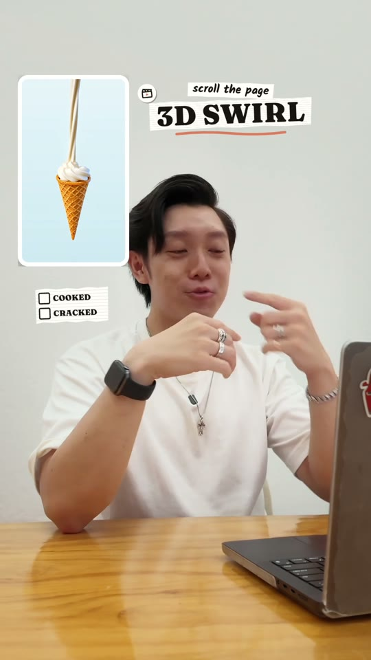
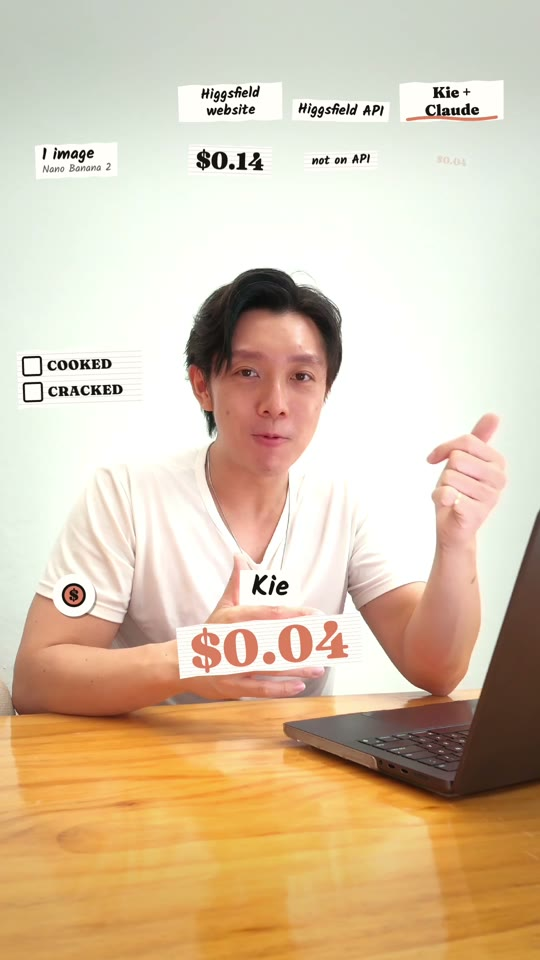
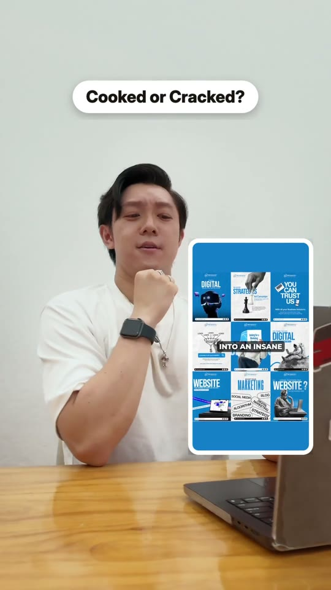
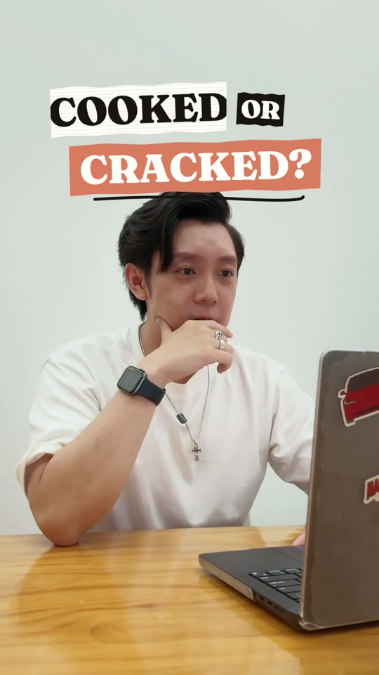
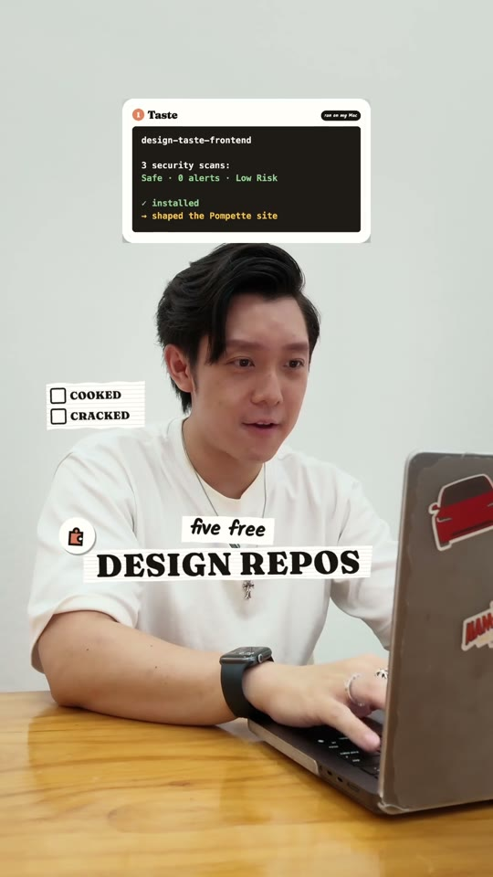
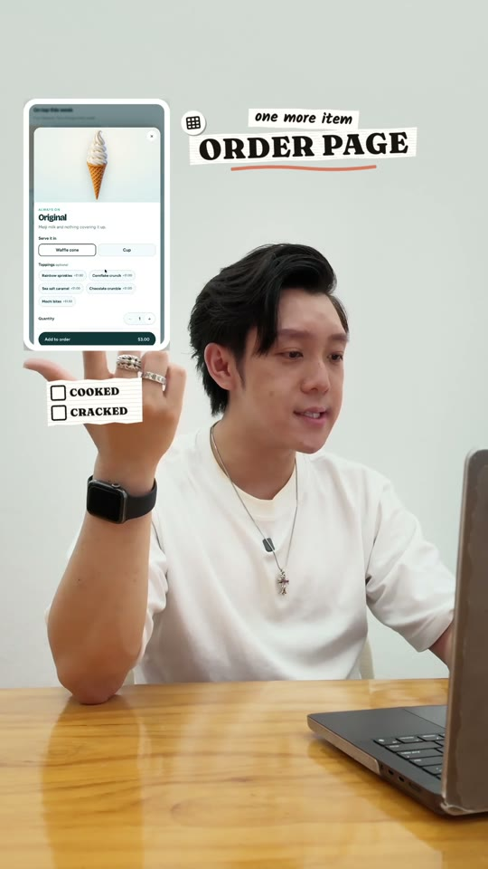
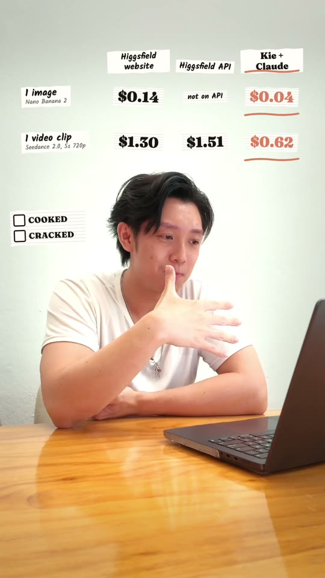
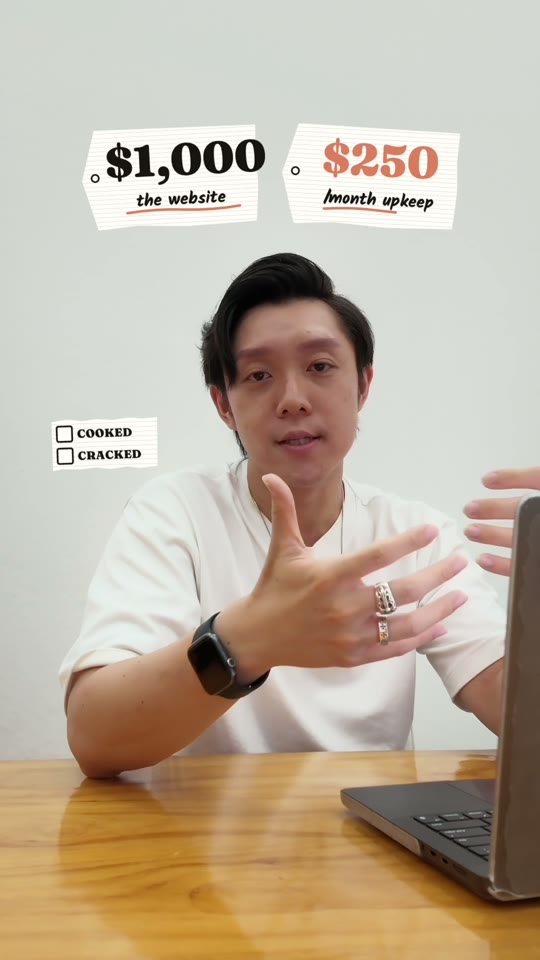
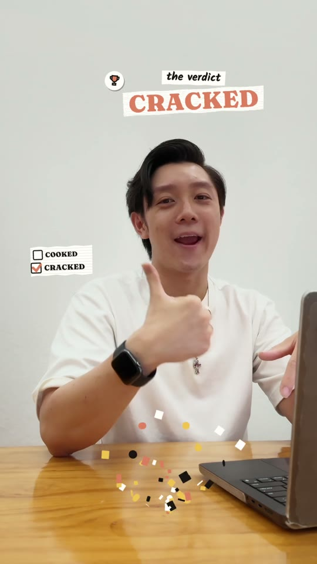
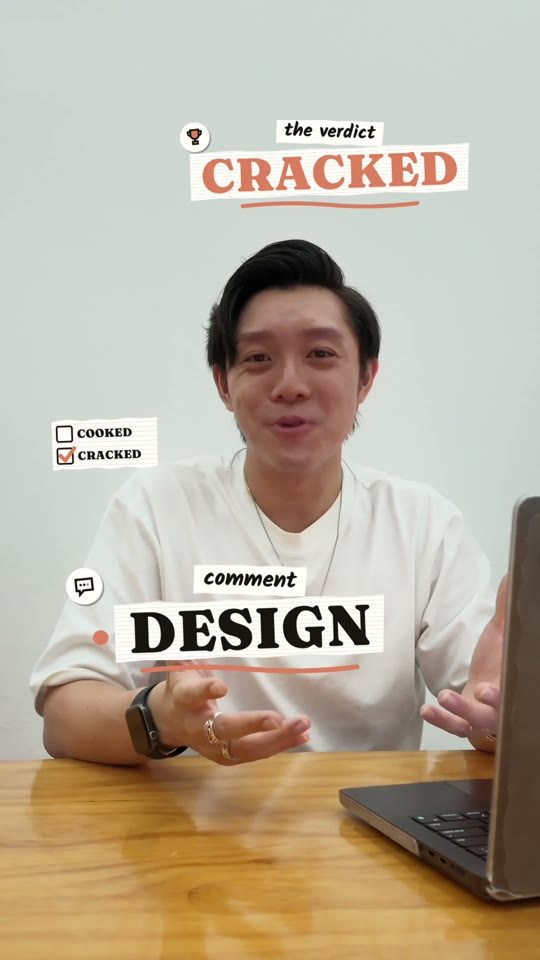

Cooked or Cracked · for editors
The editor's guide to Cooked or Cracked.
What the series is, where every file lives in the repo, and how to replicate the edit in ChatCut so an episode lands on Henry's desk ready to post.
what is inside
- Read this first · the repo is Henry'sp2
- The series on one pagep3
- The repo and the episode folderp4–5
- One episode, eight stepsp6
- What arrives before you cutp7–8
- The tools · ChatCut, Claude Code, Higgsfieldp9–10
- The frame and the stylep11–12
- The three cuts you must learnp13–15
- The passes · speech cut to exportp16–18
- Writing rules · Henry's standing notesp19–20
- Review loop · checklist · glossary · small printp21–24
steps per episode8
edit passes8
edit target1 h
Written by Henry Chua for the editors who cut this series. Checked against the repo on 28 September 2026.
the one rule
Read-only.
The repo holds Henry's style. You read it, install from it and cut with it. Only Henry changes it.
read this first
 The repo is Henry's. You work from it. Only Henry works on it.
The repo is Henry's. You work from it. Only Henry works on it.
github.com/EasyAIHenry/cooked-or-cracked is the operating manual for the series. It is public so people can follow the process. Everything in it, from the colours to the length of a pause, is a decision Henry made after watching the numbers. The style is his. This page says what that means for you.
you may
- Clone it and pull it as often as you like.
- Read every file. Start with
sop/ and the learning log.
- Copy the four skills into your own
~/.claude/skills/ so Claude Code can use them.
- Run the scripts on your own machine (
join_audit.py; make-pdf.sh rebuilds this guide), or have Claude run them.
- Ask Henry a question with a frame and a timestamp attached.
you may not
- Push, open a pull request, or edit any file in the repo.
- Change a colour, font, size, position, timing or sound in a skill, even to improve it.
- Present the style as yours, or fork it into your own series.
- Add keys, footage, cuts or audio to it.
- Post an episode. Henry posts.
How a change happens
You spot itframe + timestamp + why
→
Henry decidesyes, no, or later
→
Henry edits the skillon his Mac, runs sync.sh
→
You pullgit pull, copy the skills again
→
Next episode uses itdated entry in the learning log
A rule is real when it is in skills/cooked-or-cracked/references/learning-log.md or in a SKILL.md. A rule in a chat message is a note until it is in the repo.
Why it is this strict. Ep1 got 118 follows from 10,765 views, 1.1%, in about a day. The format converts: the sting, the pill, the paper stamps, the scoreboard. Series die when the look drifts from episode to episode. Same pill, same sting, same paper, every time.
Not in the repo: video, raw footage, cuts, keys. They live in the Drive folders DRIVE_Cooked-or-Cracked_Ep<N>_… that Henry shares per episode. The sting, the bubble pop and the mouse click are small, so they are in the repo, in the scrapbook skill's references/ folder. sync.sh refuses to commit a key.
what you are cutting
One claim, tested, with a verdict
A creator says an AI tool does something. Henry tests it with the timer on screen and says cooked or cracked. Every episode has the same three parts, and those three parts are what you learn to cut.
1 · the hook
A creator's reel with a strong hook plays. Henry reacts. The creator's own claim opens the video, in their voice, in a window beside Henry's face. He cuts in the moment the claim ends.
2 · the test
Henry tries it himself. Screen recording, timer in the corner, narrated live. Where the tool needs pictures, he makes them on Higgsfield inside the same Claude session.
3 · the opinion
His expert verdict, with receipts. Score out of ten, cooked or cracked, one line per claim with a time or a price, one thing to steal from the creator, then the comment keyword.
who is watching
Men 18 to 34 who build things. India 22%, US 11%, then Canada, Singapore, Malaysia. 99.7% are not followers. They are on the Reels tab, on a phone, sound on, with no idea who Henry is. Every line and every super has to work first time.
the verdict format
Score /10. COOKED or CRACKED. Per tool or claim: works, meh, cooked. One line of receipt each: a time, a price, or what the screen showed. One thing to steal from the creator. If a step failed because of Henry's setup, it is "my setup" and scores meh, not cooked.
The episodes so far
| Ep | Subject and claim | Verdict | Cut |
|---|
| 1 | @nateherkai, the Generate skill. Claude makes video for cents through Higgsfield or Kie. | CRACKED. Kie cheapest for images and short clips. | 2:12, posted 25 Sep 2026. Too long: the verdict at 2:05 was seen by almost nobody. |
| 2 | @nateherkai, five free design repos turn Claude into a designer. Henry built a real site for a soft serve shop with them. | CRACKED for layout, 7/10. Visuals still need Higgsfield. | 1:29, delivered 27 Sep 2026. Henry talks from pointers. |
Read the learning log before every episode. skills/cooked-or-cracked/references/learning-log.md, newest entry first. It records what each episode's numbers taught and which rule changed. Two of Ep1's rules came straight from the drop-off curve.
the repo
Where everything lives
Text only. A skill is a folder Claude Code reads before it works: SKILL.md is the instructions, references/ holds the numbers and the code.
| path | what it is | who changes it | what you do with it |
|---|
| sop/ | The eight steps of an episode, one file each. | Henry | Read first. Ten minutes. |
| skills/cooked-or-cracked/ | The series skill: pipeline, writing rules, learning log, supers library, episode templates, scripts/join_audit.py. | Henry | The learning log before every episode. |
| skills/henry-scrapbook-reel/ | The edit template for ChatCut Desktop: passes, layout numbers, style, gotchas, MG code, export recipe, sound cues, the sting. | Henry | Your main file. Gotchas before pass 1. |
| skills/creator-audit/ | Apify plus Gemini audit of a reel: transcript, beats, hook, baseline, verdict on the creator. | Henry | Read its report. The code is Henry's. |
| skills/henry-guide-pdf/ | The lead-magnet PDF format (this guide uses it). | Henry | Not your job. |
| tools/lead-scout/ | The daily Instagram scout that finds subjects. | Henry | Not your job. |
| episodes/ep<N>_…/ | One folder per episode: scripts, cut lists, research, captions, MG code, retro. | Henry via sync.sh | Read it all before you cut. |
| sites/ · students/ | The Ep2 build (the Pompette site and QR menu), and this guide. | Henry | Reference. You are here. |
how the repo gets updated
Henry's Macskills + Drive folders
→
sync.shtext only, refuses keys
→
GitHubdated commit
→
yougit pull
install once; rescan when skills/ changes
terminal
$ git clone https://github.com/EasyAIHenry/cooked-or-cracked.git
$ skillspector scan --no-llm cooked-or-cracked/skills
$ cp -r cooked-or-cracked/skills/* ~/.claude/skills/
skillspector: NVIDIA's scanner for AI skills (uv tool install skillspector). These four score low to medium. On HIGH or CRITICAL, ask Henry.
the episode folder
 Eight numbered folders, the same every episode
Eight numbered folders, the same every episode
On Henry's Mac and in Drive the folder is called DRIVE_Cooked-or-Cracked_Ep<N>_<Creator>-<Topic>. In the repo it appears as episodes/ep<N>_<creator>-<topic> with the media stripped out.
01
01_scripts/in gitscript-ep<N>.md (scorecard, beat sheet, new supers), pointers-ep<N>.md (what Henry reads on camera), recording-todo-and-say.md, the cut lists and shot maps from each pass, ig-captions-ep<N>.md, the rebuild scripts (Claude's Python that places every item, so a re-cut is one run).
02
02_graphics/code and stills in gitScreenshots, the scorecard PNG, comparison tables (HTML plus PNG), mg-code/ with the motion graphic sources, pass2-cards/ with the card sizes.
03
03_reference/metadata in gitThe reviewed reel and its Apify metadata (plays, comments, caption, duration).
04
04_raw-footage/never in gitCamera takes, screen recording, phone recording, proxies, transcripts. Drive only.
05
05_cuts/never in gitPass previews, the export passes, the episode's composite script (Claude writes it from export.md, starting from the previous episode's), and the deliverable UPLOAD-THIS-ep<N>-v<x>.mp4, plus FOR-INSTAGRAM/.
06
06_research/in gitde-myth-sheet.md, <creator>-audit-report.md, delivery-review-take<N>.md, ep<N>-insights-retro.md.
07
07_audio/Drive, and in gitcooked-or-cracked-sting-v3.wav, the series sting. The same file is in the repo at skills/henry-scrapbook-reel/references/.
08
08_guide/HTML in git, PDF in DriveThe lead magnet for the comment keyword. Built by Claude with henry-guide-pdf, uploaded by Henry.
The ChatCut project: one per episode, named like the folder, on Henry's account. The reference project with every template asset is "Cooked or Cracked — Ep1 v4 (Cindy passes)"; asset code syncs across ChatCut surfaces, so Claude copies it from there with inspect_asset includeCode. What you deliver: 05_cuts/UPLOAD-THIS-ep<N>-v<x>.mp4, 1080x1920, 30 fps, voice at -14 LUFS, with the export passes and the composite script beside it. Bump v<x> on every change; never overwrite a version Henry has seen.
one episode
Eight steps, and where you come in
From sop/00-overview.md. Your step is 6. Steps 1 to 5 produce the files you cut from. Steps 7 and 8 change the rules you cut by.
1
SubjectClaude HenryThe lead scout reports outlier reels daily. Henry picks one with a testable claim: a price, a count, a time, a "does X". No news, no drama. Receipts only.
2
AuditClaudecreator-audit pulls the reel and its numbers, Gemini watches it, the baseline is the creator's last 12 posts. Output: the audit report.
3
De-mythClaude Henry 1 hClaude writes the de-myth sheet: each claim, what it really is, pass and fail written before the test. Henry tests for one hour with the timer on screen and fills the scorecard.
4
RecordHenry 30 + 10 minScreen recording while testing, narrated live. Then the talking head: phone at eye level, DJI mic, same spot every episode, one take per beat, several attempts.
5
ScriptClaude HenryScorecard plus beat sheet (time, say, screen, super) plus 3 to 6 new supers for the episode. Henry edits on set and talks from pointers.
6
Edityou with Claude in ChatCut · Henry approves each passLoad henry-scrapbook-reel. Passes in order, one job each. Export by the v8 rule. Deliver UPLOAD-THIS. Target one hour of hands-on time; Henry's review turnarounds sit outside it.
7
PublishClaude HenryThree captions, the pinned comment with the test date, the lead-magnet PDF. Henry uploads and posts at the subject creator's posting hour (Nate Herk: 15:04 UTC).
8
RetroHenry Claude after 48 hHenry sends the Reel insights. Claude writes the retro and a dated learning-log entry. If a rule changed, the skill changes. sync.sh pushes it.
The time budget Henry set
de-myth 1 h
screen 30 min
face 10 min
edit 1 h
guide 20 min
This is Henry's budget for the whole episode; your part is the edit hour. Ep2's edit ran over two days and many passes. The target stands so the passes stay small, and if a pass will break it, say so before starting.
before you cut
What lands in the folder, and what to check
| file | what it is | what you do with it |
|---|
| 04_raw-footage/henry-take<N>.MP4 | Camera takes. HEVC 10-bit HLG, phone at eye level, DJI mic. Several attempts per line; Henry says "one more time" between them. | Scan for audio holes first (below). Ask Claude to transcribe it in ChatCut and fix the brand names before any cut. |
| 04_raw-footage/ screen recording | Up to 30 minutes of Henry testing, 1080p 30 fps, timer in the corner, narrated live. | Claude cuts fresh crops at the speed that fits the line. Check the range for dead stretches first. |
| 04_raw-footage/*-transcript.md | Word-timed transcript of each take, exported from ChatCut after Claude transcribes it. | Word times drift up to 0.3 s. Never take a cut point from them without join_audit. |
| 06_research/delivery-review-take<N>.md | Gemini's per-attempt scores (confidence, energy, clarity, eye contact), the self-cues log, strongest and weakest moments. | Pick takes from it. The last attempt of a repeated line usually wins. |
| 06_research/de-myth-sheet.md | Each claim as a row: what he says, what it really is, install line, cost. Pass and fail written before the test. | The receipts your stamps show, spelled exactly. |
| 01_scripts/script-ep<N>.md | Scorecard, beat sheet (time, say, screen, super), the new supers. | Your map. If he said it differently on camera, the camera wins. |
| 01_scripts/pointers-ep<N>.md | The bullets Henry reads on camera. Bold is the number to say. | What he meant to say. Use it to choose between attempts. |
| 03_reference/ | The reviewed reel as MP4 and its Apify metadata. | The opener window. Its numbers go in the caption. |
| 07_audio/cooked-or-cracked-sting-v3.wav | The series sting, 2.6 s, sung. Version 3 is final. | Every episode, unchanged. Never regenerate it. |
1 Scan every camera take for audio holes before you cut
terminal · prints the time and size of any gap over 30 ms
$ ffprobe -select_streams a:0 -show_entries packet=pts_time -of csv=p=0 henry-take2.MP4 \
| awk 'NR>1{d=$1-p; if(d>0.03)print p,d}{p=$1}'
66.880000 0.256 ← Ep2, take 2: a 0.256 s hole. Every cut after it landed early.Why this matters: a plain wav extraction closes the hole. ChatCut plays it as silence, so every cut after it lands 0.256 s early and clips word endings ("Higgs fie-", "web-"). It cost Ep2 several review rounds. Give Claude the gap times; it offsets each source in-point past them when it builds the cut. Verify on the ChatCut export itself.
before you cut · the reviewed reel
Know the hook before you cut the reaction
The audit report in 06_research/ is Gemini watching the creator's reel: transcript with timestamps, beat sheet, hook technique, pacing, CTA, and a verdict on the creator. You need five things from it.
1The claim sentence and where it ends. That is your opener cut point. Ep2: "You can now turn Claude into an insane AI designer with 5 free tools." 3.5 s. Cut after "tools".
2The hook technique. Benefit listicle, bold claim plus tool name, price shock. Henry's reaction sits on the claim. Cut the creator's intro.
3Every tool name, spelled as the source. The creator may say it wrong (Nate said "Image twenty-three"; the repo is img2threejs). Your super shows the real name.
4The creator's comment keyword. So you do not reuse it. Henry uses his own (Ep1: KIE, Ep2: DESIGN).
5The multiple over their median. Ep2's reel did 7.1x Nate's usual plays. It goes in the caption, never in the audio.
the audit, Ep2, in short
Hook 10/10, benefit-driven listicle. 12 to 15 cuts per 10 s. Split screen keeps a face visible under the B-roll. Comment gate FRONTEND: 9,400 comments on 337k plays. Score 9.5/10, CRACKED as a creator. One thing to steal: a list too fast to write down, then the written list behind a keyword.
two different scores
The audit scores the creator as a creator. The episode scores the claim. Henry's verdict is about the tool. Keep them separate on screen and in the captions.
What Henry is doing when he reacts
He reacts as a viewer who already builds things, hearing a claim and deciding to check it. The reaction shot is muted and short: chin on hand, a small nod, then his own first line. The creator gets credit in the caption ("@nateherkai posted 5 free repos…"). Anything that reads as a takedown gets cut.
A strong hook is the reason the episode exists. The lead scout only surfaces reels that beat the creator's own median by 2.5x or more. When you cut the opener, you are borrowing that hook for three seconds. Do not shorten it below the claim, and do not let it run past it.
the tools
 How the edit is built
How the edit is built
Claude Code drives ChatCut Desktop through its connector, following the henry-scrapbook-reel skill. You steer it one pass at a time and check every preview.
Youbrief, pick takes, check
→
Claude Codeskills loaded, does the mechanics
→
ChatCut Desktoptimeline, MG assets, captions, export
→
ffmpeg, run by Claudecomposite, voice, re-encode
→
05_cuts/UPLOAD-THIS
you
Brief one pass at a time. Pick the takes. Read every cut list and plan before saying go. Watch every preview and export end to end. Spell-check the supers. Send Henry the preview and your three lines.
Claude
The transcript fixes, the cut list and its cut.json, the join audit, the crops and speed-ups, the MG JSX (copied from the project assets and mg-code.md), every ChatCut placement, the ffmpeg composite, the voice chain, the contact sheet, the Gemini listen. You never write React or ffmpeg by hand; you check what it did.
1 Install ChatCut Desktop and Claude Code
ChatCut Desktop from chatcut.io, signed in to the account Henry tells you to use. Ask whether it has ChatCut Pro: it tells you which export recipe on page 18 to expect; the test export confirms it. Claude Code inside the Claude desktop app (Code tab) or in the terminal. Copy the four skills in (page 4).
2 Connect ChatCut to Claude, then start every session the same way
In ChatCut Desktop, connect the agent from its settings; Claude then sees tools named chatcut_desktop. Media stays on the Mac it was imported on.
type in ClaudeLoad the henry-scrapbook-reel skill and the cooked-or-cracked skill. Target the ChatCut project "Cooked or Cracked — Ep<N> <topic>" and confirm its id. Read the learning log and the gotchas before pass 1. We are on pass <N>: <one job>. Show me the plan before you change anything.
settled with Henry once, on day one
- Which Mac and ChatCut login (the template project is on Henry's account), and whether it has ChatCut Pro.
- Who creates the episode project and imports the footage: Claude, as pass 0, on the machine holding it.
- Where previews and questions go (that channel's cap is the 30 MB on page 18).
- A Gemini key for the unprimed listen.
Tool names you will meet: target_project (points Claude at the episode project; the connection follows whatever the app has open, so Claude calls it first every time), edit_item, propertyOverrides (the props on one MG item), inspect_item (read back the timeline), local_export.
the tools · Higgsfield
 Higgsfield makes the pictures. ChatCut cuts them in.
Higgsfield makes the pictures. ChatCut cuts them in.
Higgsfield is in the series two ways. In Ep1 it was the subject: its website, its API and Kie, three prices for the same models, so the edit was a table that built as the prices were spoken. In Ep2 it was the tool Henry used inside the test. The five design repos got the layout right and the visuals wrong, so he generated the product photos and the clip on Higgsfield, through its Claude connector, in the same session.
in the test Henry
He runs it live in Claude. The Higgsfield widget is on screen while it generates. Ep2: 10 images on GPT Image 2.5 (one master cone, then the flavours from it, same angle, same light) and one 5-second clip on Kling 3.0. 36.25 credits.
in the edit you
The recording of the widget generating goes on a paper card at about 10x, at the moment he says "Higgsfield". The results (the cone sheet, the raw clip, the 8-frame strip) follow as cards or in the window. Credits and model names are stamps.
in the words you
Say only what it did. "Higgsfield made the clip. The page plays it frame by frame as you scroll." Never "all five tools built the site". The split verdict is the honest one: repos for layout, Higgsfield for visuals.

the Kling clip, top-left window
stamp on the spoken words
Ep2, 0:33. "Scroll the page, 3D swirl." The generated clip in the window, the stamp beside it, scoreboard on the wall.
1 How Henry connects it (so you can read the recording)
Claude · Settings · Connectors · Add custom connector
https://mcp.higgsfield.ai/mcp
Needs a paid Higgsfield plan. Starter from US$19 a month billed yearly (checked 27 Sep 2026).
2 What ChatCut generates itself
ChatCut has its own generation tools (music, shaders, images, voices). The series used them for the sting and for the skin-smoothing shader. It does not use them for visuals inside a test, because the test is about what the tool under review can do, on Henry's account, with the timer running.
3 The receipts to keep on screen
- Model names as text: GPT Image 2.5, Kling 3.0, Seedance, Nano Banana 2.
- Costs as numbers: credits or dollars, never "cheap".
- The clock, when time is the claim.
the frame
Every zone has a job. No empty wall.
1080x1920, 30 fps. Henry full frame is the background, same 1.1x crop on every clip, never tighter (the 1.3x punch-in on page 14 is the one exception). Two layouts: the table layout when the subject is a price, the window layout otherwise. The script's beat sheet says which.
stamp, top zone
scoreboard, whole video
landscape card on paper
bottom UI zone ~430 to 480 px
Ep2 layout: Henry full frame, screen material in a top-left window or on a paper card, stamps in the top zone. Nothing on the face.

table builds at the top
value pops on the spoken number
scoreboard
stamp at the bottom while a table is up
Ep1 layout: the comparison table at the top (y 120 to 580), key-word stamps at the bottom (y 1140 to 1500). Stamps move up when the table leaves.
the numbers (width x height at left/top; skill, 27 Sep 2026)
- Safe zone: top ~220 px, bottom ~430 to 480 px, sides ~65 px, x under ~850 below y ~1150 (icon rail); the 3 s opener reel is the accepted exception.
- Top stamps 820x328 at 130/228. Bottom stamps 760x304 at 120/1130. Bottom cards end by y 1440.
- Screen windows 300x533 at 64/230, frame MG 12 to 14 px larger each side. Paper cards: centre y 500, max height 700.
- Scoreboard 220x195 at 40/790 (Ep2). Title at y 140, verdict stamps at y 150.
the three laws of the frame
- Nothing on the face. Ever. Shrink a window before it touches his hair or chin.
- No empty wall. If a zone is empty, the current stamp goes there. One stamp per key phrase, start to end, no gaps, never the same phrase twice.
- Inside the safe zone. Check at 2x before export. Captions, when used, sit in Ep1's band (y 1440 to 1740), which overlaps the bottom UI zone: check them on a phone.
the style · do not drift
 Paper, ink, coral. Fraunces, Kalam, Inter.
Paper, ink, coral. Fraunces, Kalam, Inter.
#FFFEFA paperevery card, with ruled lines
#171411 inkwords, borders, shadows
#DF825F accentwinner, underline, active word
#F2C14E goldconfetti only
type
Fraunces 900 for numbers and the big word. Kalam 700 for the handwritten label. Inter 800 for the pill and captions.
motion
Pop-in with overshoot: scale 0.3 → 1.1 → 1 over about 13 frames, 1 to 3° tilt. The orange underline draws over 18 frames. Then hold still. No fades, no pulsing, no spinning.
sound
Bubble pop on every graphic entrance, mouse click on every price card. Files in the skill's references folder. Impacts land in the silent gap after the word. Music bed at -22 dB, only after the sting.
The template assets (copy the code, change only the props)
Sizes here are the asset canvas; on the timeline the item is placed smaller (page 11) and scales.
| asset | where and when | props you set |
|---|
| Series pill "Cooked or Cracked?" | Top centre, opener only. | text |
| Window frame (portrait 640x1107, landscape 640x360) | Around every screen window and the reviewed reel, as a box 12 to 14 px larger on every side. One continuous item per position. | border = the border you want in px ÷ (frame width ÷ 640), plus radius. A 300x533 window with a 12 px border: 324x557 frame, border 24, radius 59 |
| Jingle title COOKED · OR / CRACKED? | Top, y 140, over the sting. | word1..3, beat1..3 (frames 4/18/30) |
| Paper stamp with icon badge (1000x400) | One per key phrase. Top zone, or bottom while a table is up. | label, word, wordSize, wordColor, icon |
| Compare table header and rows; tier card, tool card, time stamp, tally, wipe, terminal strip | Top zone, built on the spoken words. Reuse when the episode calls for them. | d1..d3 pop frames, values, winner; see supers-library.md |
| Scoreboard COOKED / CRACKED (260x230) | Left wall, from the end of the sting to the end. | tickAt = verdict frame minus item start |
| Verdict stamp, price stamps; confetti burst (1080x1920, 130 f) | Top, y 150, on the spoken word. Confetti full frame, CRACKED only, table clears first. | word, score, value; count |
New supers per episode: three to six, for what Henry says, listed with props in the script; Claude writes their JSX in the ChatCut project; Henry adds them to supers-library.md after the edit. Shared code (torn edge, ruled paper, pop) is in references/mg-code.md. Never restyle a template asset.
the three cuts · 1 of 3
The hook: their reel, his face
The first four seconds decide everything. Ep1 lost half its audience by 0:08 because six seconds passed before a claim was spoken. The opener is now fixed.

pill, top centre
reel on the right, beside the chin
Henry muted, reacting
Ep2, 0:01. Their audio only. Cut at the end of the claim.

title pops on the sung words
Ep2, 0:05. The sting, after his hook line, never before his first words.
Ep1 had the window on the left; Ep2 pass 4 repeated it and Henry called it out: "it's so weird." Right side is the rule.
10:00 the reviewed reel plays in a portrait window on the right, low, beside the chin, over the phone or laptop that is in the shot, never over the face. Ep2: reel 380x676 at 628/790, frame 408x704 at 614/776 (border 22, radius 53), white rounded frame with a shadow. If it cannot fit, make it smaller. Its audio is the only audio.
2Henry is muted and reacting: chin on hand, a small nod. Pick the take where he is looking at the phone. The base export can draw green speckles in this window; Claude re-lays the clean reel into the rectangle in the composite (page 18).
3Pill "Cooked or Cracked?" top centre, Inter 800, white. It stays until the window closes.
4Cut at the end of the creator's claim sentence, about 3 to 4 s. Not one word later. Henry's first words follow the cut, by about 0:03. A claim is heard from frame one: the creator's, then his. No silent hold before the first claim, ever.
5The sting comes after his hook line ("Well, let's test it out."), over a 2.6 s teaser of the episode's best visual, or Henry on screen not talking (a hold under the sting is fine; the sting is the sound). The title COOKED · OR / CRACKED? pops word by word on the sung beats (frames 4/18/30), two rows at the top, never on the face. Sting at about -5 dB, 1 to 2 LU above his voice.
6The scoreboard appears when the sting ends and stays to the last frame.
the three cuts · 2 of 3
The test: show the thing while he says it
Henry narrates what he did. Your job is to have the screen prove it at the exact word, with the number on screen when he says the number.

real terminal output, on a card
tool name as text
Ep2, 0:06. Taste installing on Henry's Mac, one 0.9 s card per repo.

phone in the window
Ep2, 0:53. "One more item, order page." The phone recording plays in the top-left window.

rows build as he speaks
Ep1, 1:11. Values pop on the spoken number, winner in orange.
1Henry stays full frame. Screen material goes in the top-left window (9:16 crops of the browser pane or the terminal, cut by Claude with ffmpeg) or on a ruled-paper card. The card has a white border, a soft shadow and a 1 to 1.5° tilt, and takes the landscape material: GitHub pages, Maps, the chat, the desktop site. One continuous window frame per position; never restart it at each clip cut.
2Speed to fit the line. Prompt typing about 11x, the Higgsfield widget about 10x, a site scroll about 3x, set as playbackRate on the ChatCut item. Cut fresh crops from the original each time. A still stretch reads as "the screen froze".
3Show the tools running. Real terminal output and results from Henry's machine. GitHub pages alone are not enough. One 0.9 s card per tool, in the order he names them, spelled exactly as the source: playwright-cli, awesome-design-md, img2threejs.
4Say the number, show the number. A value card pops on the spoken word. Bubble pop on entrance, click on a price. Nothing appears before he says it. When the subject is a price, build the table: header tags as he names each column, values on each spoken number, rows stay until the verdict line.
5The real-life beat. After the demo and before the price: who can use this and how. Ep2: POS ordering, a site for menu and opening hours, and Henry's line "amazing for small business owners". Henry called the cut rushed until it had one.
6Punch in instead of cutting around the line. When a line comes from the other take on camera, punch in 1.3x on the face. It reads as emphasis.
the three cuts · 3 of 3
The opinion: verdict, receipts, then the ask
This is the part people follow Henry for. Henry says what worked, what did not, what he would charge, and the score. Once. Then the save frame and the keyword.

stamps on the spoken prices
Ep2, 1:23. "$1,000 the website. $250 month upkeep."

verdict stamp, top
tick on the word
confetti, CRACKED only
Ep2, 1:25. The scoreboard ticks on "cracked". Confetti because it is.

comment stamp, to the end
Ep2, 1:28. "Comment DESIGN." Henry's keyword, never the creator's.
1Where the verdict lands. The beat sheet fixes it. The series default is 45 to 55% of runtime, so people see it (Ep1's at 2:05 of 2:12 was missed); Ep2's came just before the CTA on Henry's call. If the beat sheet is silent, ask Henry once.
2Say it once. "Cracked" and the score come once, together. Do not repeat the verdict with a second score later.
3Tick on the word. Scoreboard tickAt = verdict frame minus the item's start frame. Extend the MG asset's duration first. Verdict stamp at the top, y 150.
4Confetti only for CRACKED or a declared winner (Ep1: "Kie beats both"). Table clears first. Full-frame paper confetti, then a trophy stamp at the top.
5Keep only what a tool did. Cut "I wish", "it didn't", "I actually wanted". A flaw gets one line and a receipt.
6The business beat is the price line. "I'd charge", never "you can make". Price stamps pop on each number.
7The save frame. The scorecard as one clean card, held 2 full seconds with no other super, on "screenshot this". Saves were Ep1's top action at 3.5%.
8The ask. Comment stamp with Henry's keyword, held to the last frame. The keyword is said once around the verdict and once at the end. Dates never in the audio; they go in the pinned comment.
One thing to steal: every verdict names one move worth copying from the creator (it is in the audit report; a stamp if he says it). Sound: impacts in the silent gap after the word, tails trimmed.
the passes · pass 1
Cut the speech first. Everything else waits.
Cindy Zhu's passes: one job per pass, preview a frame before committing, keep everything editable, confirm with Henry between passes. The three cuts on pages 13 to 15 are built across the passes: the hook in passes 1, 2 and 5, the test in 1, 3, 4 and 5, the opinion in 1, 3 and 5. Pass 1 is the speech, and it is where most review rounds are lost.
1Fix the transcript before any cut. Claude does it with manage_transcript: Higgsfield, Kie, Claude, Seedance, Nano Banana, Kling, and the episode's repo names. If the transcript vanishes (captions show 0 cards), re-transcribe and re-run the fixes; word indices stayed stable across re-transcription on Ep1.
2Pick takes from the delivery review. The last attempt of a repeated line usually wins. Never the "one more time" or "cut this in the edit" bits.
3Full sentences only. Drop tangents, stray "so", "uh", "actually". Keep the hook, the test, the real-life beat, the price, the verdict, the CTA, and a trim order (which lines go first if it must be shorter). The beat sheet sets the length (the series default is 60 to 75 s; Ep2 shipped at 1:29 on Henry's call).
4Pauses. About 0.28 s after a sentence, 0.16 s inside one. Squeeze only silence (below the noise floor join_audit measures, plus 6 dB; gaps of 0.35 s or more; keep 0.10 s either side). Never squeeze a brand name. The final word gets a 0.35 s tail. Durations computed from cut points use round(), so the last consonant survives; an item can never be longer than its asset (page 17).
5Breaths. Where two sentences run together with no gap, insert a 6 to 8 frame muted breath of the same shot. Use real silence from the next line's lead-in or the previous line's tail first; a still frame only when there is none.
6Run the join audit. Claude writes cut.json from the cut list it proposed (take, in-point, frames per item) and runs the script; you read the output. Move every "<<" join to the valley, the quietest point within 100 ms. Check the GAPS list for a word the recogniser mislabelled: on Ep2 it called "shop" an "uh", and striking the "uh" deleted "shop".
terminal · skills/cooked-or-cracked/scripts/join_audit.py
$ python3 ~/.claude/skills/cooked-or-cracked/scripts/join_audit.py cut.json --render cut.wav
# JOINS: "<<" means the cut sits inside speech. GAPS: removed stretches that still hold a word. PAUSES: under 0.15 s sounds rushed.
7One unprimed listen of the rendered audio by a model that has not seen the cut list. Ask Claude to run it (Gemini 3.1 Pro with the key from page 9; the Gemini app with cut.wav uploaded works too): "Transcribe verbatim, include fillers and partial words, list cut-off words." Never put example errors in the prompt; it will report them whether or not they exist.
8Show Henry the cut list, wait for "apply". Then build. Verify on the ChatCut export itself: Claude cross-correlates each exported clip against its source and reports the offset per clip (anything but 0 ms is a mis-cut), and you listen once more.
Never cut through a word. "Higgs fie-" and "web-" cost Ep2 several rounds: the audio hole on page 7, and trusted transcript times.
the passes · 2 to 7
One job per pass, in this order
Henry's order of work: flow and cut first, then animation, then sound, then colour. Each pass ends with a 720p preview to him and his notes.
| pass | the job | done means |
|---|
| 2 · Reaction opener | Reviewed reel in the right window, pill, Henry muted, cut at the claim, sting after his hook line with the title. | First words by 0:03. No silent hold. Their audio, then his. |
| 3 · Stamps | One paper stamp per key phrase: label, big word, icon badge. Top zone, or bottom while a table is up. Claude builds the episode's new MG assets first, as JSX in the ChatCut project. | No empty wall. Every stamp spelled as the source. Never the same phrase twice. |
| 4 · Table, windows, cards | The table at the top when prices are the subject. Screen windows and paper cards at the word he names the thing. Speeds set per line. | Values pop on the spoken number. Nothing on the face. One frame MG per window position. |
| 5 · Sound | Bubble pop on each entrance, click on each price card, impacts in the gap after the word. Music bed on its own track at -22 dB from after the sting, fade in 15 frames, fade out 45. Other SFX from ChatCut's sound library; Ep2 levels: pops and clicks -9, whoosh -12, ding -16, boom -19. | Reel and sting 1 to 2 LU above his voice, not 5 to 7. No SFX masks a word. |
| 6 · Captions | ChatCut preset Paper Stack, Fraunces 900 uppercase, ink, orange active word, brand names spelled as the source. In the bottom band (y 1440 to 1740), only in dead-air windows: 1.5 s or more with no stamp in the bottom zone. Ep1 used them from 1:31; Ep2 shipped without. | Never over a stamp. Off unless the beat sheet asks for them. |
| 7 · Colour | None. Skin smoothing 0.55 (Claude's Ep2 shader, copied per project) on the COLOUR 1 pixel-effect track under the supers. | The camera's original colour. No exposure, saturation, vignette or bands. |
ChatCut gotchas (parameters Claude passes; you see them in its output and inspect_item)
ripple:true shifts only the edited track; shift the others with startDeltaFrames.- An MG dropped on an occupied span silently moves to another track: pass
trackId.
- Moving or resizing an MG item can wipe its
propertyOverrides. Re-set, then inspect_item.
- An item can never be longer than its asset: floor the asset length (7.233 s is 216 frames, not 217).
- Rows re-added by
apply_script can inherit -60 dB: set decibelAdjustment 0 on every speech clip.
- Library SFX fail with auto duration: import once, then place with an explicit
durationFrames.
the passes · pass 8
 Export, check, hand over
Export, check, hand over
ChatCut's export has changed behaviour from day to day on Henry's account, so the rule is: test one export, then pick the recipe. Claude runs every ffmpeg step below; you check the result.
1Test one full export, 1080x1920, 30 fps, captions off. Look at a graphic's edge at 2x.
2If the graphics are transparent (the v8 rule): one app export, plus a captions-only export when the beat sheet has captions. The episode's composite script (Ep1's was composite-v8.sh) overlays the caption band in the dead-air windows, levels the voice, and re-lays the clean reviewed reel into the opener window if the base shows green speckles. The normal case.
3If the graphics sit on a green box (the account has no ChatCut Pro): three passes (four with confetti), all 1080p 30 fps. Base: graphic tracks hidden, captions off. Graphics: tracks on, captions off. Captions: tracks hidden, captions on. Key with ffmpeg colorkey; chromakey keys the wrong thing. Any full-frame MG (confetti) needs its own pass, overlaid with enable='between(t,start,end)'. Recipe in henry-scrapbook-reel/references/export.md. If MG items overlap on the matte, they hide each other; ask Henry for the per-track recipe from the DET reel (his event reel, cut with the same skill).
terminal · the graphics key from references/export.md (confetti 0.10:0.04, captions 0.14:0.10)
[1:v]colorkey=0x005800:0.12:0.05,format=rgba,split[c][a];[a]alphaextract,erosion,erosion[m];[c][m]alphamerge[fg];[0:v][fg]overlay[v]
4Voice chain on the composite: highpass 70 Hz, compressor 2.5:1 (threshold -24 dB, makeup 2), then two-pass loudnorm I=-14, TP=-1.5, LRA=7. Check with volumedetect: about -14 LUFS, peaks at or under -1.5 dBTP.
5Re-encode with libx264 CRF 18, yuv420p, AAC 192k. The app export is an intermediate (one day in September 2026 it came out HEVC 10-bit at 0.6 Mbps whatever codec was asked for). Every delivery file, 1080p or 4K, is the libx264 re-encode.
6Check before hand-over. A contact sheet of the whole cut (ffmpeg tile). Edges at 2x: no green, no fringes, inside the safe zones. Every super spelled against the source. Scoreboard from the sting to the end, save frame held 2 s, keyword stamp to the last frame.
7Deliver 05_cuts/UPLOAD-THIS-ep<N>-v<x>.mp4, Ep2 also got a FOR-INSTAGRAM/ folder: a 4K pair (a 2160x3840 app export of the same timeline, re-encoded the same way, with and without music) and a phone pair (1080p at about 2.4 Mbps, under 30 MB). UPLOAD-THIS is the master; when the pairs exist Henry posts from them (Ep2: the 4K file). Ask him whether the episode needs them. Keep the export passes and the composite script next to the cut so it can be rebuilt.
previews for Henry
720p, CRF 25, about 25 MB (the upload cap is 30 MB). Never a 540p proxy: he judges quality from what you send (his note from the DET reel, 25 Sep 2026; not yet in the skill). Name them ep<N>-pass<P>-v<x>-preview.mp4.
HLG takes
The camera records HEVC 10-bit HLG (bt2020, arib-std-b67). ChatCut tone-maps it before any shader, so Ep1's grade numbers wash the face out. Check with ffprobe … color_transfer. The current rule makes this moot: no grade.
words on screen
 Writing rules for every super and caption
Writing rules for every super and caption
From skills/cooked-or-cracked/references/writing-rules.md. The viewer is on a phone, on the Reels tab, sound on, no context. Every line must be followable on first hearing and readable on first sight.
do
- One idea per sentence. Under 12 words spoken, under 6 words on a super.
- Say the number, show the number, at the same moment.
- Name the tool once on screen and once out loud, at the same moment.
- Receipts only: "4 cents", "11 minutes", "it found the broken button".
- Plain verbs: works, costs, found, missed, took.
- UK English. Present tense for what the screen shows.
- If Henry's setup caused a failure, say "my setup".
- Dates in the caption and the pinned comment, never in the audio.
do not
- No rhetorical reversals: "it is not X, it is Y". Say the fact.
- No hype words: insane, crazy, game changer, honestly, literally, mind-blowing, shocking.
- No throat-clearing: "so basically", "let me show you", "here is the thing".
- No questions the video then answers.
- No em dashes, no exclamation marks, no emoji in supers.
- No time-bound words in speech or labels: last week, today, just launched.
- No adjectives before a number: "62 cents", not "a whopping 62 cents".
- Never the same key phrase on two stamps.
What this means for the stamps you write
Henry says the line his way; the stamp is the receipt in six words or fewer. The label is the context in Kalam, the word is the fact in Fraunces. Examples that shipped:
| he said | label | word |
|---|
| "Kie is cheaper by 10 cents." | Kie is | 10 CENTS CHEAPER |
| "...doesn't have a website. It's called Pompette." | the test subject | POMPETTE |
| "Why not, let's put in Higgsfield." | one more tool | HIGGSFIELD |
| "I'd charge them $1,000 for the website." | the website | $1,000 |
| "Comment down DESIGN and I'll send you my entire workflow." | comment | DESIGN |
Self-check before you show Henry anything. Read every super out loud once. If it needs two lines to fit the stamp, shorten it. If it survives with the adjective removed, remove it. If Henry said "crazy" on camera, the audio stays as he said it; the stamp does not repeat it.
Henry's standing notes
 Things he has already called out once
Things he has already called out once
Each of these cost a review round on Ep1 or Ep2. They are in the skills with the date. Do not make him say them again. When he gives a new note, it becomes a dated line in the skill and the learning log; until it is in the repo, it applies to this episode only.
| the note | what it means for the cut | when |
|---|
| "It's so weird" (window on the left, as in Ep1) | The reviewed reel's window goes on the right, beside the chin, as big as fits without touching the face. | 27 Sep, Ep2 pass 4 |
| No colour grade | He rejected a brightened grade, a darker grade and a wall-darkening pass. Original camera colour. Skin smoothing 0.55 only. | 27 Sep, Ep2 |
| Spell-check every super | Repo and brand names exactly as the source: playwright-cli, awesome-design-md. The chips had shortened names. | 27 Sep, Ep2 |
| Scoreboard always on the side | From the end of the sting to the end of the video, like Ep1. | 27 Sep, Ep2 |
| Show the tools running | Real runs from his Mac: terminal output, result screenshots. | 27 Sep, Ep2 |
| "It feels rushed" | Add the real-life beat after the demo. Sentence breaks about 0.28 s. Breaths where sentences run together. | 26 Sep, Ep2 pass 1 |
| "Too many long pauses" | 0.28 s after a sentence, 0.16 s inside. Squeeze silence only, never a word or a brand name. | 27 Sep, Ep2 pass 2 |
| "You should have me typing at the background while we have a picture in picture look" | When the screen recording plays, he stays on screen. The current form: he is full frame, the screen is in the top-left window. | 27 Sep, Ep2 pass 2 |
| First words by 0:03, sting overlaps | Six seconds of window plus sting hold cost Ep1 half its audience. First words by 0:03, sting after the hook line. | 26 Sep, Ep1 retro |
| Keep only what a tool did | Cut "I wish", "it didn't", "I actually wanted it to be 3D". The business beat is the price line only. | 27 Sep, Ep2 rebuild 8 |
| Order of work | Flow and cut, then animation, then sound and SFX, then colour. | 27 Sep, Ep2 |
| "I don't talk like that" | He does not read scripts. He reads pointers. Cut what he said and move the supers to match. | 26 Sep, Ep2 |
| Evergreen wording | "Last week" was cut from Ep1's audio and label. No time-bound words anywhere in the video. | 25 Sep, Ep1 v7 |
| The sting is sung | Autotuned vocal, near-silent backing, 2.6 s, abrupt start. Spoken tags and busy beds were rejected. Version 3 is final. | 25 Sep, Ep1 v7 |
the review loop
How a pass gets approved, and how the series learns
You build the passone job
→
720p previewunder 30 MB, named by pass
→
Henry's notesshort, in his words
→
You fix, bump v<x>never overwrite
→
"apply"then the next pass
how to send a pass
- One file, one message: what changed since the last version, in three lines, and where to look (timestamps).
- Anything you are unsure of, ask as a choice: "A or B at 0:41".
- If a rule and the footage disagree, say which you followed and why.
- Never send a pass you have not watched end to end with the sound on, on a phone.
how to read his notes
- "Feels rushed" = breaths at 0.28 s and the real-life beat is missing.
- "Long pauses" = squeeze to 0.28 / 0.16, silence only.
- "Overblown" = the shirt is clipping; you graded. Remove the grade.
- "Weird" = a layout rule is broken. Check the window side and the face first.
- "Abrupt", "words cut off" = a join inside a word, or the audio hole. Back to join_audit.
After posting: the retro that changes the rules
48 h of insightsHenry sends screenshots
→
retro file06_research/ep<N>-insights-retro.md
→
learning logdated entry, newest first
→
SKILL.mdif a rule changed
→
sync.shyou pull before the next episode
| Ep1 number | value | what it changed |
|---|
| Average watch | 31 s of 132 s (23%) | Target 60 to 75 s. Verdict earlier: the series default is 45 to 55%. |
| Gone by 0:08 | about 50% | A claim heard from 0:00, Henry's first words by 0:03. Sting overlaps the teaser; no silent hold. |
| Saves | 377 (3.5%), the top action | A save frame held 2 s on purpose. |
| Follows | 118 (1.1%) | Keep the format. Do not drift. |
| Audience | India 22%, US 11%, men 97% | Plain English, tool names as text, prices as numbers. |
Numbers to beat on the next episode: average watch 40 s or better on a 70 s cut, saves 4%+, follows 1.5%+, comments 3%+ with the comment gate.
Cooked or Cracked · save this page
The episode checklist for editors.
Tick every line before the next pass. The cut is done when the last box is done.
Before pass 1 read, scan, target
- git pull, skills copied and scanned, project targeted
- Learning log read, newest entry first
- Episode folder read: script, pointers, de-myth sheet, audit, delivery reviews
- Takes scanned for audio holes
- Transcript brand names fixed
Pass 1 speech
- Full sentences, tangents out, fillers out, no word cut
- Real-life beat kept
- Pauses 0.28 / 0.16, breaths from real silence
- join_audit clean, GAPS empty
- Unprimed verbatim listen clean
- Cut list shown, "apply" received
Passes 2 to 7 layout, stamps, sound, captions, colour
- Reel window right, pill, first words by 0:03, sting after the hook line
- Scoreboard from the sting to the last frame, tick on the verdict word
- No empty wall, nothing on the face, inside the safe zone
- Tools shown running, names as the source; values pop on the spoken number
- Captions in dead air only; no grade, skin smoothing 0.55
The opinion verdict, save frame, ask
- Verdict and score once; confetti only if CRACKED
- Save frame held 2 s alone
- Keyword stamp to the last frame, Henry's keyword
- No dates or hype words on a stamp
Pass 8 export and hand-over
- One test export at 2x, then the right recipe (v8 or three-pass)
- Voice -14 LUFS, peaks under -1.5 dBTP
- libx264 CRF 18; pairs if Henry asked
- Contact sheet, edges, spelling, safe zones checked
- UPLOAD-THIS-ep<N>-v<x>.mp4 in 05_cuts with the passes and the script
Every preview to Henry the habit
- 720p CRF 25, under 30 MB, watched on a phone; three lines: what changed, where to look, what you need
Never the repo rule
- Push, edit or share the repo
- Change a colour, font, timing or sound in a skill
- Regenerate the sting
- Post the episode
glossary
The words in the repo
Apply Henry's word for "go ahead and build it". Nothing changes on the timeline before it.
Audit The creator-audit report: Gemini watching the reviewed reel, plus the baseline maths.
Baseline, multiple The creator's median plays over their last 12 posts, and how many times the reviewed reel beat it.
Beat sheet The script's table: time, say, screen, super.
Breath A 6 to 8 frame muted piece of the same shot inserted where two sentences run together.
Comment gate "Comment KEYWORD and I'll send it." The keyword triggers an automated DM with the guide.
Composite The ffmpeg step that overlays export passes, levels the voice and re-encodes for delivery.
Cooked / cracked Fails the claim / lives up to it. Also the scoreboard's two boxes.
Dead air A stretch of 1.5 s or more with no stamp in the bottom zone. The only place captions go.
De-myth sheet Each claim as a row: what he says, what it really is, install line, cost, pass and fail written before the test.
Delivery review Gemini's scores of every attempt in a camera take, with the self-cues log.
Green matte ChatCut exporting graphics on a solid green box instead of transparent. Keyed out with colorkey.
Join audit join_audit.py. Checks every cut point for speech, removed words and pause length.
Key phrase The words in a line worth a stamp. One stamp each, never repeated.
Learning log The dated list of what each episode taught. Newest first. Read it before every episode.
MG, motion graphic A ChatCut asset written in JSX with props. Stamps, table, scoreboard, confetti, title, frames.
Pass One job on the timeline, approved before the next. Eight per episode.
PiP, window A small framed video inside the frame: the reviewed reel in the opener, screen recordings during the test.
Pointers The bullets Henry reads on camera instead of a script.
Props, propertyOverrides The editable values on one MG item: label, word, icon, tickAt.
Real-life beat Who can use this and how. After the demo, before the price.
Receipt A time, a price, or what the screen showed. The only kind of proof the series uses.
Safe zone The part of a 1080x1920 frame Instagram does not cover with its own UI.
Save frame The scorecard held 2 s alone so people screenshot it.
Scoreboard The COOKED / CRACKED checkbox card on the left wall, ticked on the verdict.
Skill A folder Claude Code reads before it works: SKILL.md plus references.
Super, stamp A super is any on-screen graphic the script calls for. A stamp is the torn-paper super with a Kalam label, a Fraunces word and an icon badge.
Sting, jingle The 2.6 s sung "Cooked or cracked?" after Henry's hook line. Version 3, final.
sync.sh Henry's script that copies skills and episode text into the repo and pushes. His only.
Unprimed listen A verbatim transcription of the rendered audio by a model that was not told what to look for.
UPLOAD-THIS The master deliverable. Henry posts it, or the FOR-INSTAGRAM pair made from it.
v8 rule Test one export; if graphics come out transparent, one export plus a captions band. Otherwise three-pass keying. Named after Ep1's v8 cut.
the small print
Who this is for, and the sources
this guide is for you if
You are cutting Cooked or Cracked for Henry, or learning to. You can run Claude Code, you can open ChatCut Desktop, and you can read a folder before touching a timeline. You are fine with a template that does not bend.
not yet if
You want to bring your own look. This series has one, and it is measured. Learn to hit it exactly first; the place to try ideas is a preview with "A or B". The repo is public to read; the style stays Henry's.
about the numbers in this guide
Every layout number, level, timing and rule here was read from the repo on 28 September 2026: the SOP, the four skills, the learning log and the Ep1 and Ep2 folders. The repo changes after every retro, and the skill files win over this guide wherever they differ. The Higgsfield plan price was checked on 27 September 2026 and changes at the company's discretion.
where each page came from
- The pipeline and owners:
sop/00-overview.md to sop/08-retro.md.
- The audience, the verdict format, the writing rules, the supers, the learning log:
skills/cooked-or-cracked/SKILL.md and its references/.
- The passes, layout numbers, style constants, gotchas, export recipe and Henry's dated notes:
skills/henry-scrapbook-reel/SKILL.md, references/export.md, references/mg-code.md.
- The worked examples and the frames:
episodes/ep1_nateherk/ (v8 cut, 25 Sep 2026) and episodes/ep2_nateherk-frontend/ (FINAL2 cut, 27 Sep 2026): cut lists, shot maps, delivery reviews, the Ep1 ChatCut prompt set, the de-myth sheet, the DESIGN guide v2, and the Ep1 retro (filed in the Ep2 folder).
where the repo disagrees with itself (this guide took the newer line; Henry settles it in the skill)
- Opener:
sop/05-script.md says first spoken line at 0:00; the learning log's Ep2 entry says the creator's claim first, Henry at 0:03. - Verdict: series skill 45 to 55% of runtime; scrapbook skill Ep2 v8 rule: once, just before the CTA.
- Picture in picture: learning log says recording full frame, Henry low-left; scrapbook v8 rule says Henry full frame, screen top-left.
- Length: 60 to 75 s (series skill), 60 to 130 s (scrapbook pass 1), 1:45 or less (Ep2 v8), 2:00 (Ep2 pass 2).
- From the Drive folder, not the repo: Ep2's length (1:29, measured on FINAL2), the FOR-INSTAGRAM pairs, the preview-size note.
If a page here disagrees with a skill file, the skill file is right and this guide gets fixed. Say so with the page number and the file.
Henry Chua.